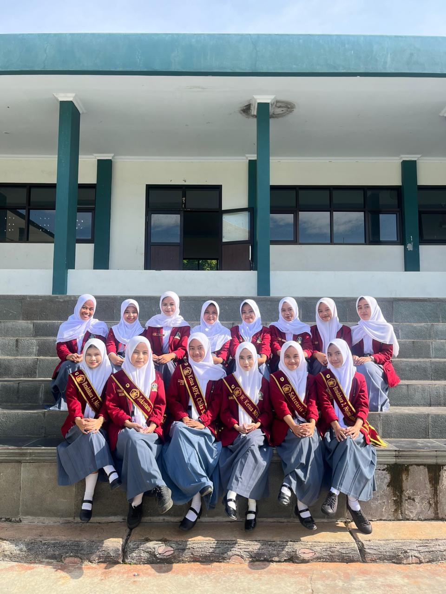
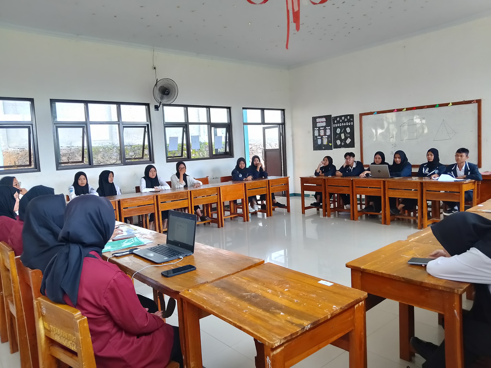
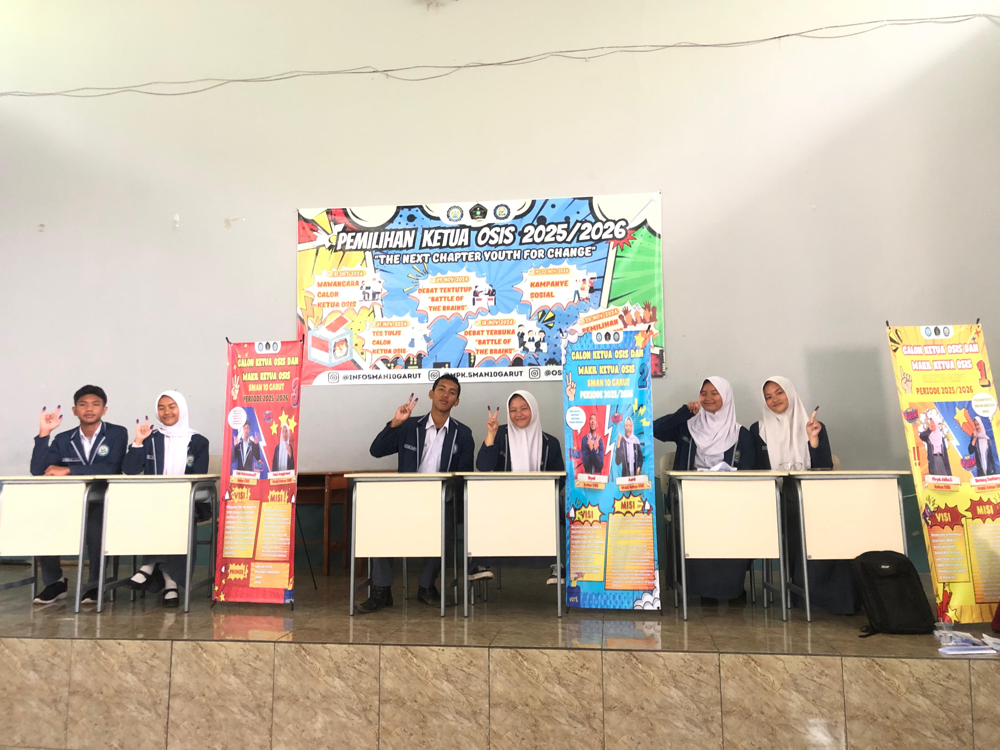
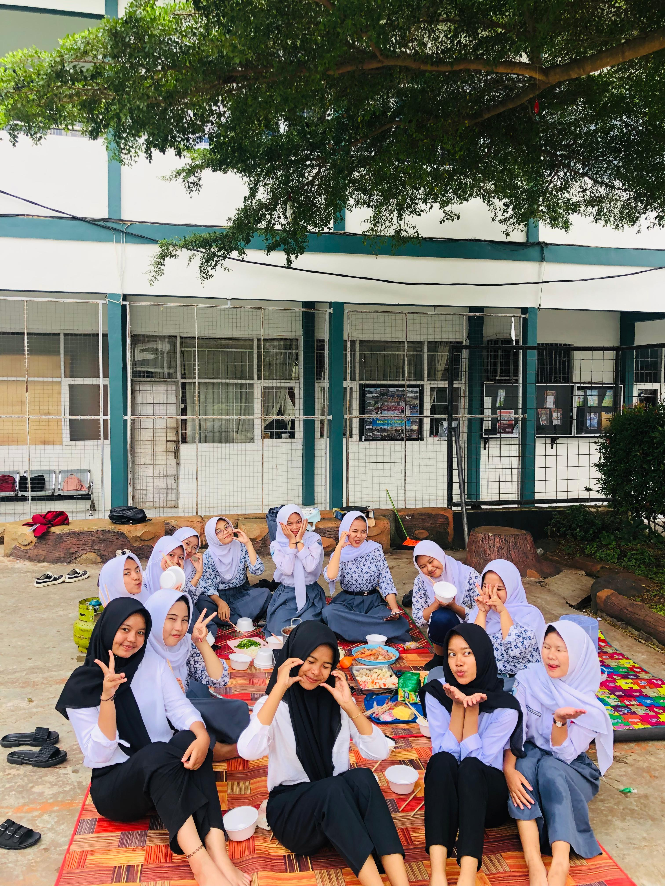
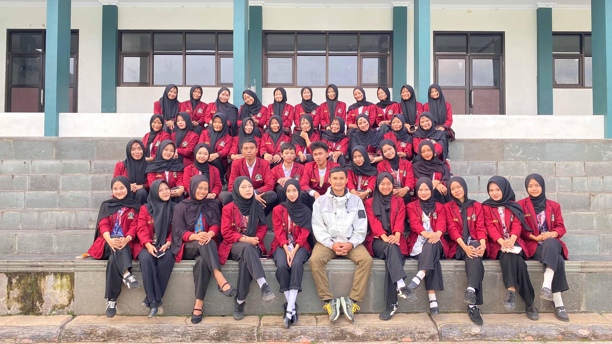
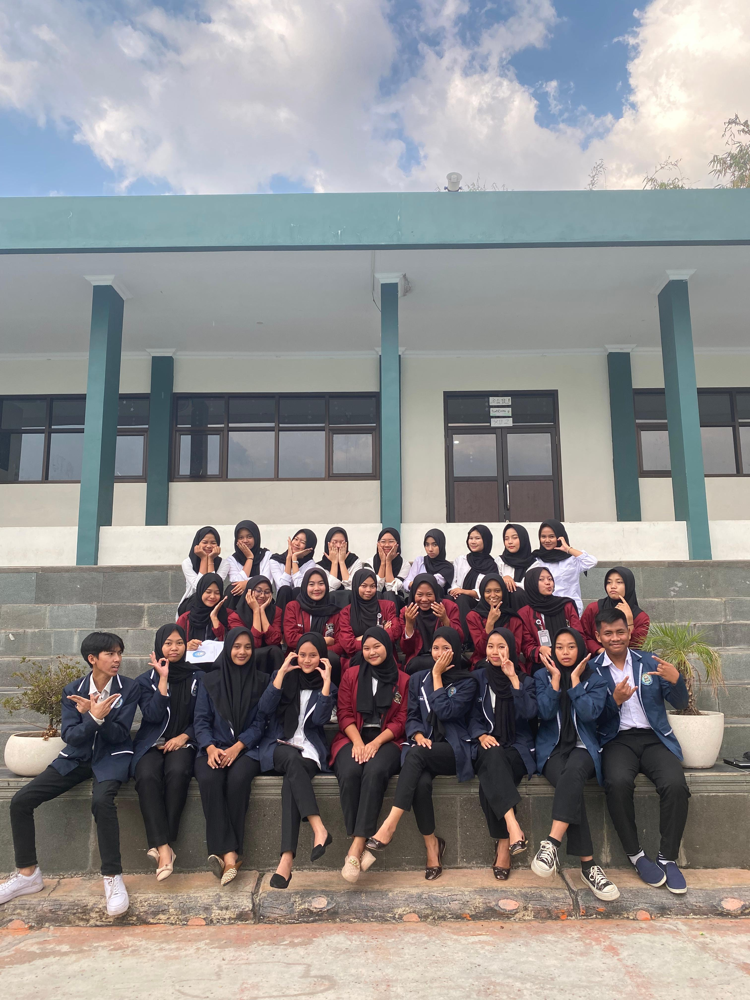
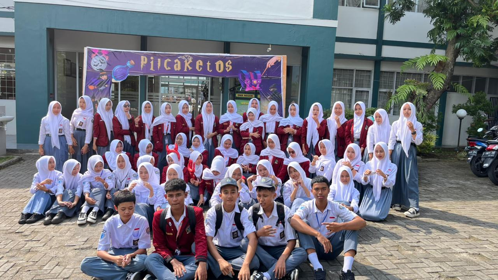
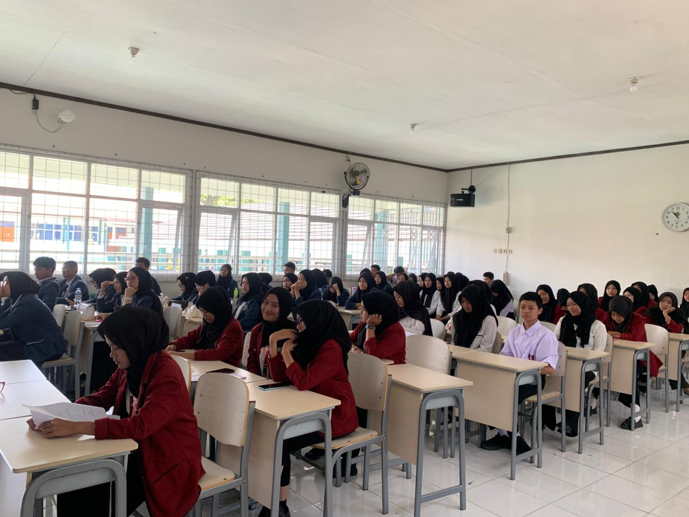

Mengawal Aspirasi • Mengawasi Kinerja OSIS • Membangun Integritas
JelajahiAspirasi Siswa
Kegiatan & Sidang
Pengawasan Aktif
Pengurus Inti
Majelis Perwakilan Kelas (MPK) merupakan organisasi sekolah yang bertugas mengawasi dan mengevaluasi kinerja OSIS, menampung aspirasi siswa, serta membantu menciptakan tata kelola organisasi yang transparan dan bertanggung jawab.
Menjadi organisasi representatif yang aktif mengawal aspirasi siswa menuju sekolah berintegritas.
Menyalurkan aspirasi siswa, mengawasi program kerja OSIS, menjalin komunikasi dengan warga sekolah, dan menumbuhkan jiwa kepemimpinan generasi muda.








Chika Sri Rahayu
Zahra Agistin
Melysa Robi Nur Aini
Listy Zaelanty
Najmi Ramadhani Shidiq
Mesa Oktovani
Sheila Siti Maulidah
Selpia Hepi
Nida Fauziyah.
Nalda Dwi Afshara.